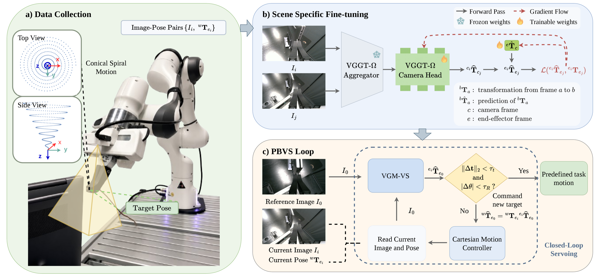
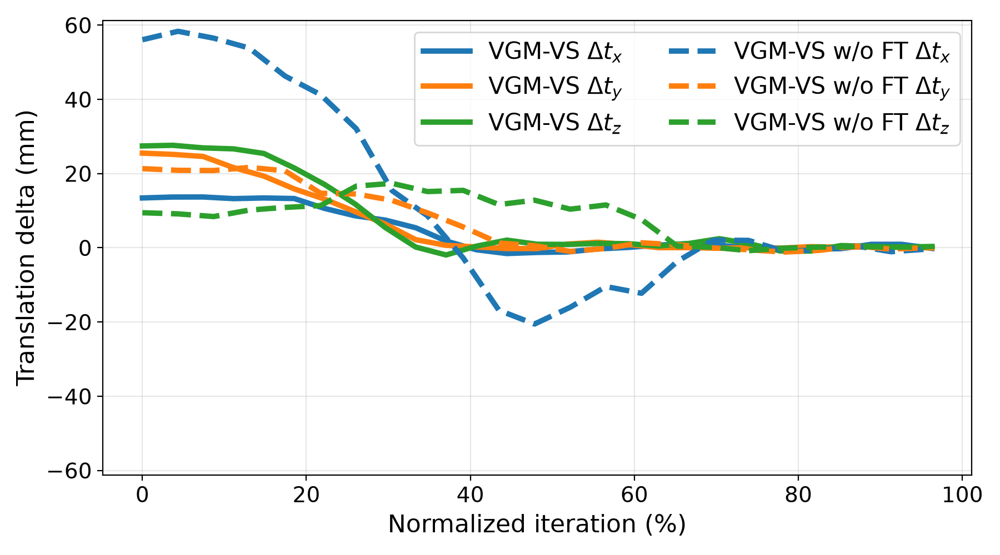
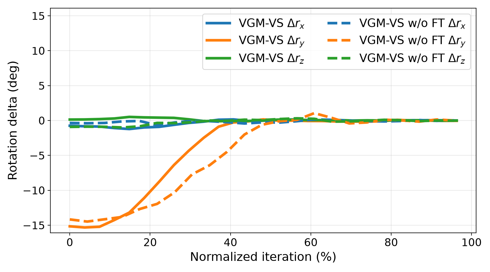
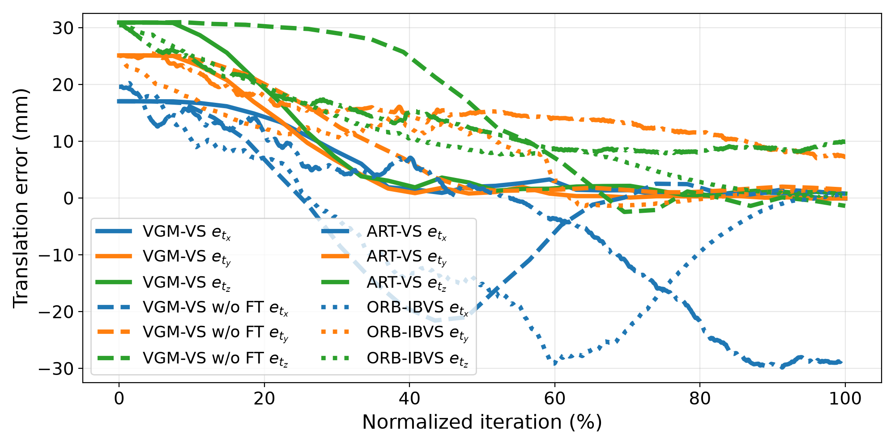
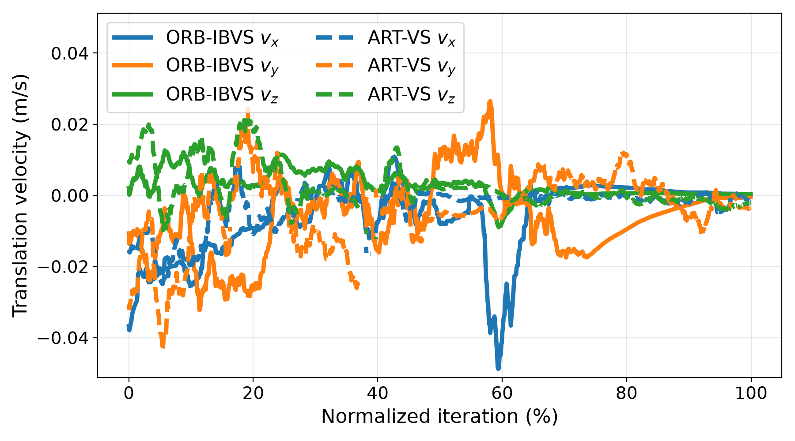
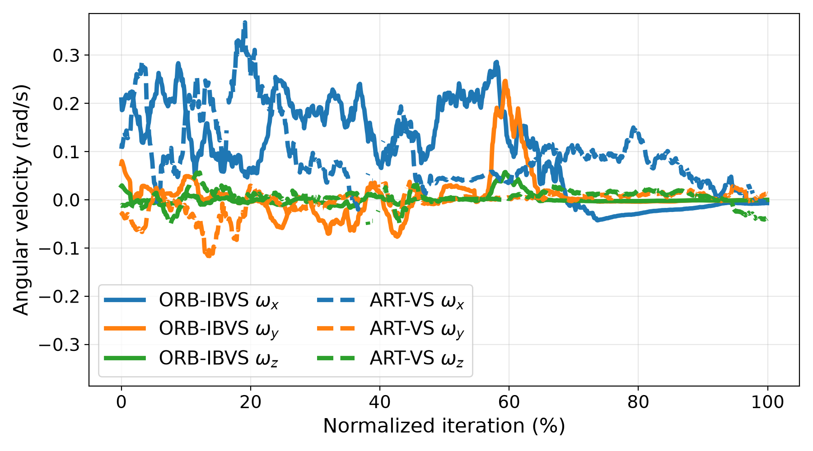
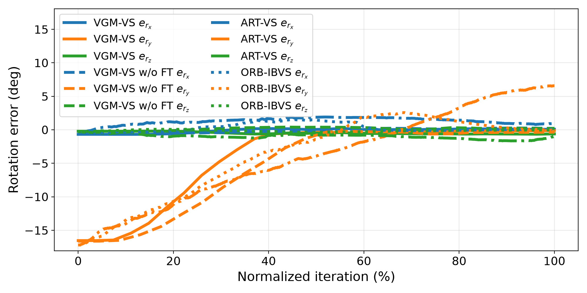

We present VGM-VS, a visual servoing method built on a pretrained feed-forward visual geometry model. Given the current view and a reference image captured at the target configuration, we estimate the relative camera pose with a visual geometry model and apply it iteratively as the pose increment of a closed-loop pose-based visual servoing (PBVS) scheme. The geometry-aware representation acquired from large-scale pretraining keeps this estimate reliable when the target is occluded, weakly textured, or covers only a small part of the image. However, the scale ambiguity inherent to these models leaves the predicted translation defined up to an unknown scale, while the pose increment must be metric for robot control. We close this gap with a scene-specific metric adaptation: the robot autonomously records image–pose pairs along a predefined motion starting from the target pose, and we fine-tune the camera head on these data, jointly learning the hand–eye transform and thus removing the need for a dedicated calibration process. We evaluate our method on three real-world assembly tasks with demanding tolerances: USB-C cable picking, cable insertion, and RAM insertion. Running in real time at 30Hz, VGM-VS converges to submillimeter terminal accuracy on the cable tasks, and reaches success rates of 90–100% when the target is moved during servoing. It converges in all trials under initial displacements of up to 30cm from the reference pose and with 50% of the target object occluded, outperforming the compared visual servoing baselines.

Real-robot runs of VGM-VS on the three assembly tasks under random initial poses, target occlusion, and a moving target. In RAM insertion, the module is first grasped from a fixture with a predefined motion. In all methods, the final insertion or picking is a simple linear motion defined in the TCP frame, executed once the alignment process has converged.
Random Initial Pose
Example Camera View
~50% Target Object Occlusion
Moving Target
Moving Target + Complete Occlusion
Random Initial Pose
Example Camera View
~50% Target Object Occlusion
Moving Target
Random Initial Pose
Example Camera View
~50% Target Object Occlusion
Moving Target
| Task | Eval. type | Setting | Method | Conv. (%) ↑ | et (mm) ↓ | eR (°) ↓ | Iter. ↓ | Success (%) ↑ |
|---|---|---|---|---|---|---|---|---|
| RAM insertion | Init. pose pert. | Small | ORB-IBVS | 100 | 3.45 | 0.8 | 777.34 | – |
| ART-VS | 46 | 32.97 | 6.47 | 140.11 | – | |||
| VGM-VS w/o FT | 100 | 6.6 | 1.04 | 23 | – | |||
| VGM-VS | 100 | 0.95 | 0.45 | 26.64 | – | |||
| Large | ORB-IBVS | 66 | 3.69 | 0.78 | 926.33 | – | ||
| ART-VS | 27 | 65.34 | 15.11 | 110.35 | – | |||
| VGM-VS w/o FT | 96 | 6.95 | 1.11 | 29.75 | – | |||
| VGM-VS | 100 | 1.15 | 0.55 | 26.79 | – | |||
| Scene dist. | 25% occ. | ORB-IBVS | 40 | 5.43 | 1.15 | 1101 | – | |
| ART-VS | 65 | 30.12 | 6.20 | 79 | – | |||
| VGM-VS w/o FT | 100 | 5.55 | 1.25 | 21 | – | |||
| VGM-VS | 100 | 3.37 | 0.87 | 17.65 | – | |||
| 50% occ. | ORB-IBVS | 15 | 7.32 | 1.66 | 1297 | – | ||
| ART-VS | 55 | 29.82 | 5.84 | 41.18 | – | |||
| VGM-VS w/o FT | 85 | 14.8 | 2.85 | 43.29 | – | |||
| VGM-VS | 100 | 4.21 | 1.07 | 19.4 | – | |||
| Dynamic | ORB-IBVS | 55 | – | – | 1951 | 30 | ||
| ART-VS | 20 | – | – | 39.5 | 10 | |||
| VGM-VS w/o FT | 90 | – | – | 27 | 60 | |||
| VGM-VS | 100 | – | – | 20.2 | 95 | |||
| Cable picking | Init. pose pert. | Large | VGM-VS w/o FT | 100 | 4.61 | 0.32 | 36 | – |
| VGM-VS | 100 | 0.58 | 0.20 | 26.56 | – | |||
| Scene dist. | Dynamic | VGM-VS w/o FT | 90 | – | – | 17.38 | 10 | |
| VGM-VS | 100 | – | – | 12.29 | 100 | |||
| Cable insertion | Init. pose pert. | Large | VGM-VS w/o FT | 100 | 1.98 | 0.33 | 26.62 | – |
| VGM-VS | 100 | 0.67 | 0.08 | 33.06 | – | |||
| Scene dist. | Dynamic | VGM-VS w/o FT | 95 | – | – | 11.6 | 0 | |
| VGM-VS | 100 | – | – | 15 | 90 |






RAM insertion under large initial pose perturbation. The x axis represents the number of inference steps (%). VGM-VS variants are shown in (a), (b); the keypoint-based baselines in (d), (e); all four methods in (c), (f). The increments of the fine-tuned model decay monotonically to zero, whereas VGM-VS w/o FT overshoots and changes sign before settling, and the velocities of the keypoint-based baselines keep fluctuating along the trajectory.
@misc{pan2026vgmvs,
title={VGM-VS: Rethinking Visual Geometry Model for High-Precision Visual Servoing},
author={Yimin Pan and Sen Wang and You Zhou and Jianfeng Gao and Pengbo Sun and Ahmed M. Naguib and Zoltan-Csaba Marton},
year={2026},
eprint={2609.28312},
archivePrefix={arXiv},
primaryClass={cs.RO},
url={https://arxiv.org/abs/2609.28312},
}